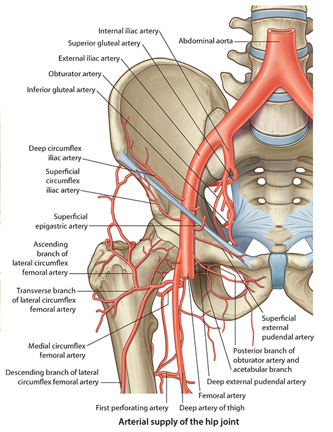

×

Lab 6 - Module 1 - The Gluteal Region: Page 5 of 8
Arteries of the Gluteal Region and Posterior Thigh
|  |
| Tap on image to enlarge |
| The arteries of the gluteal region are all branches of the internal iliac artery. The arteries of the posterior thigh are primarily from the perforating branches of profunda femoris. |